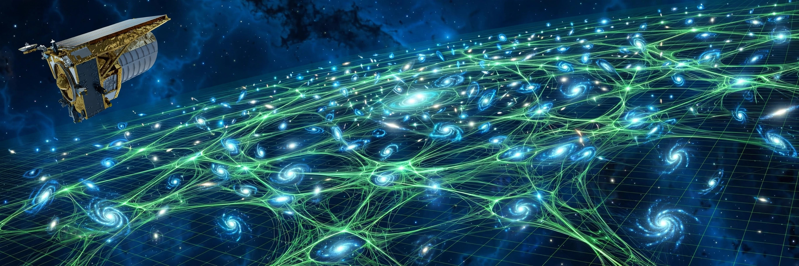
November 13, 2026
Euclid Just Handed Us the First Draft of the Universe's 3D Map
The Euclid Consortium and ESA have released DR1 Foundation — 13 months of observations covering a patch of sky equal to 9,500 full moons, with light from more than a billion objects. It is the foundation for the largest-ever 3D map of the cosmos, built to attack the dark universe: dark matter, dark energy, and why the expansion of the universe is accelerating.
READ THE STORY →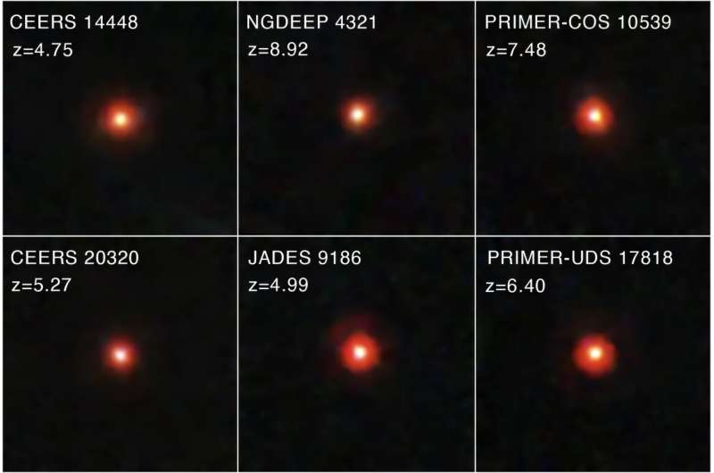
November 11, 2026
Webb's Little Red Dots May Be Black Holes Being Born
Since the James Webb Space Telescope opened its eye, astronomers have been puzzled by hundreds of tiny red specks in the early universe that no theory predicted. New simulations from a University of Portsmouth-led team say they may be primeval galaxies where the first supermassive black holes are forming by direct collapse — a model that fits, not a sighting.
READ THE STORY →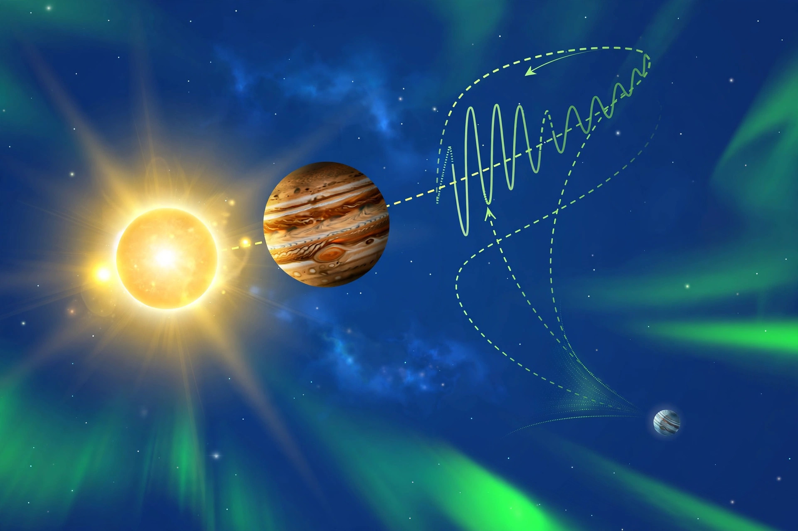
November 10, 2026
The Disappearing Planet: A Hidden Neighbor Is Tilting TOI-2535 b Out of View
For seven years, NASA's TESS watched a hot Jupiter called TOI-2535 b cross its star every 8.25 days. Then the transits got shorter, shallower, and late — and in 2026 they stopped. A UCLA-led team says an unseen neighbor is wobbling its orbit like a top.
READ THE STORY →November 10, 2026
The Supernova Impostor: Chandra Finds What Keeps Making a Giant Star Erupt Every 113 Days
AT 2016blu in NGC 4559 has erupted at least 27 times since 2012 without destroying itself. NASA's Chandra X-ray Observatory caught it mid-outburst in March 2026 — and found a hidden black hole or neutron star companion pulling material off it every 113 days.
READ THE STORY →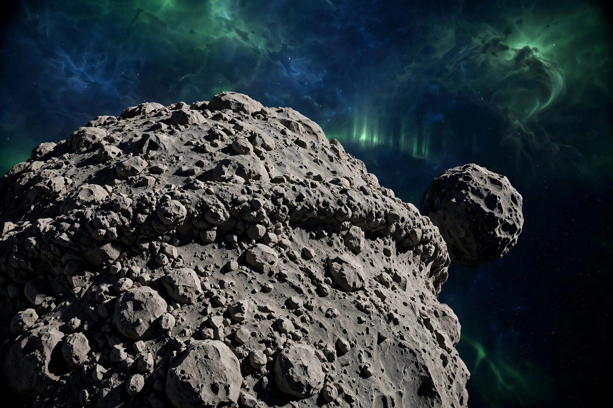
November 06, 2026
Hera Just Saw the Side of Didymos DART Never Photographed
ESA's Hera spacecraft returned its first close-range image of the Didymos asteroid system on November 5, 2026 — a boulder-strewn face of Didymos that DART's camera never saw, with Dimorphos peeking from shadow.
READ THE STORY →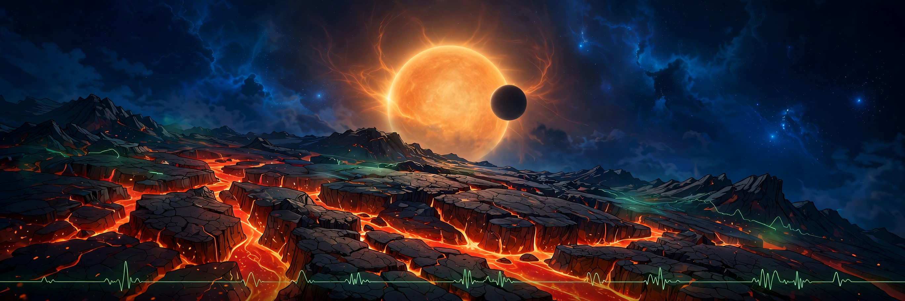
November 05, 2026
A Lava World Circles Its Star Every 5.4 Hours — and Hubble Just Watched It Disappear Behind It
Hubble has detected the secondary eclipse of a rocky exoplanet for the first time. TOI-2431b is a 6.2-Earth-mass lava world with a 5.4-hour year and a dayside near 2,524 K — hot enough to melt rock.
READ THE STORY →November 05, 2026
Built to Chase the Universe's Biggest Explosions — Swift Came Home in Fire
NASA's Neil Gehrels Swift Observatory re-entered Earth's atmosphere on November 4, 2026, ending more than two decades of watching gamma-ray bursts. It made its last observation on October 20, a rescue mission failed in July, and the Sun itself hastened the end.
READ THE STORY →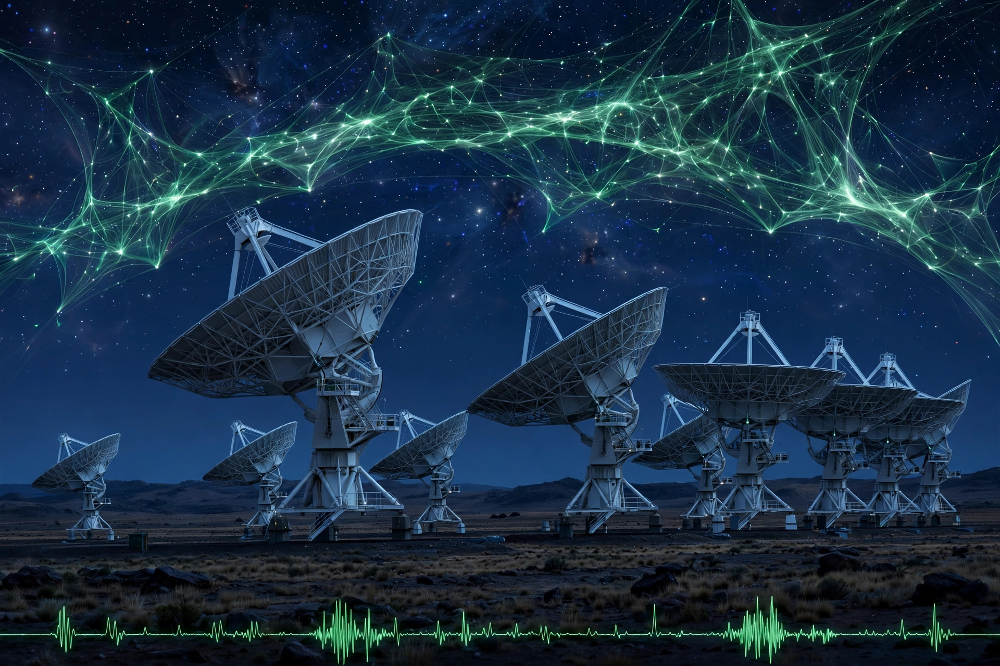
November 04, 2026
They Heard Hydrogen Clumping 4.5 Billion Years Ago — and the Cosmic Web Showed Up
The MeerKLASS collaboration has made the first measurement of large-scale cosmic hydrogen clustering with 21-cm intensity mapping — a decade of work, a signal 10,000 times fainter than the foreground noise, and a map of the universe drawn in hydrogen instead of light.
READ THE STORY →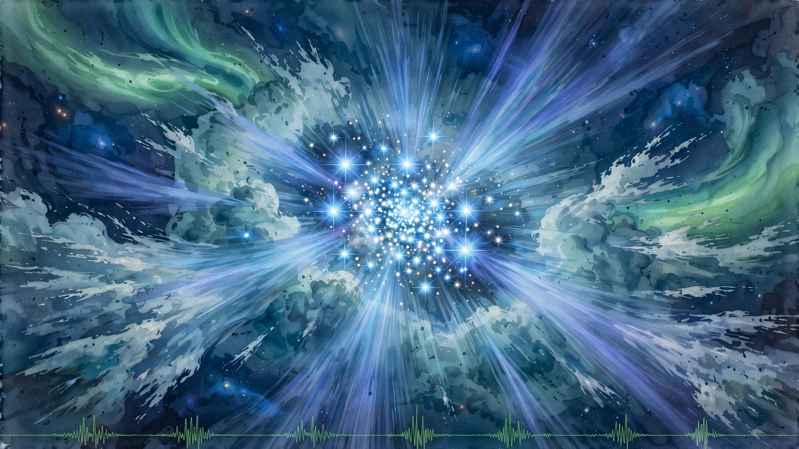
November 04, 2026
The Early Universe's Galaxies Were Too Bright. A Cosmic Leaf Blower May Explain Why.
JWST found more bright galaxies in the early universe than anyone expected. New simulations from the Flatiron Institute and UT Dallas suggest ultraviolet light from young star clusters acted like a leaf blower, clearing the fog of gas and dust so the starlight could reach us.
READ THE STORY →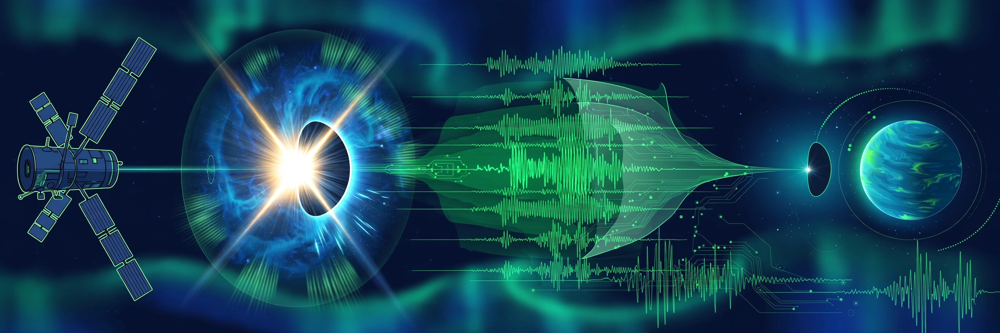
November 04, 2026
A Giant Planet Was Hiding in Two-Year-Old Webb Data — New Software Just Found It
Planets are a million times fainter than their stars, and Webb's own tiny wobbles bury them in glare. A Northwestern team's new method, FLIP, models the telescope itself — and pulled 51 Eridani b out of data where standard processing saw nothing.
READ THE STORY →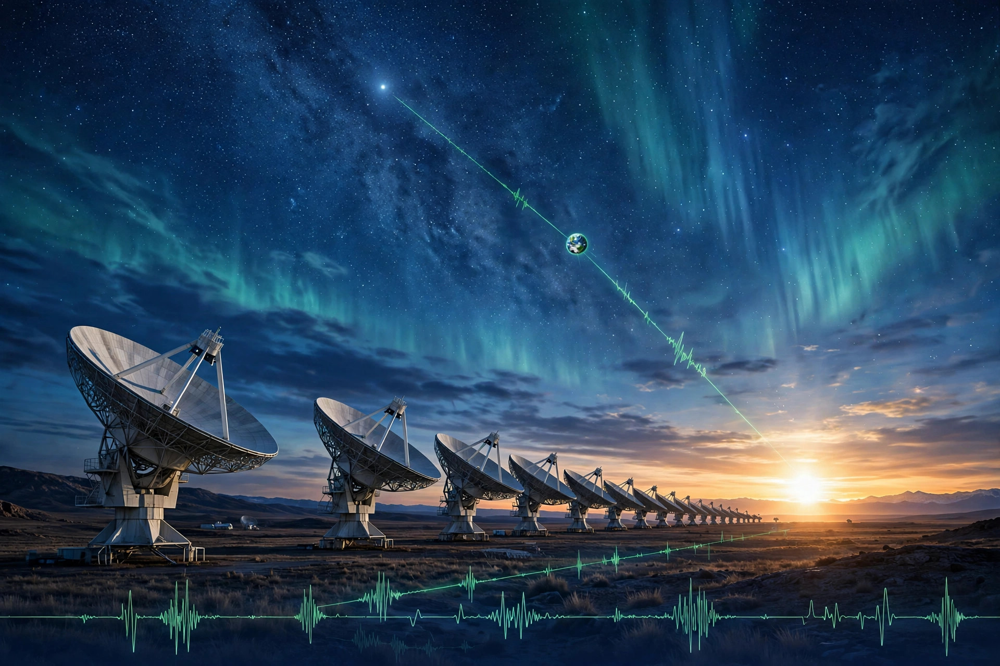
November 04, 2026
When Should We Listen for Alien Signals? SETI Turns to Game Theory
A SETI Institute team is searching the anti-solar point — the one sky alignment two civilizations could independently pick without ever communicating — two to three nights a week for about four years. The pilot found no technosignature, but it was the first time anyone actually tested the idea.
READ THE STORY →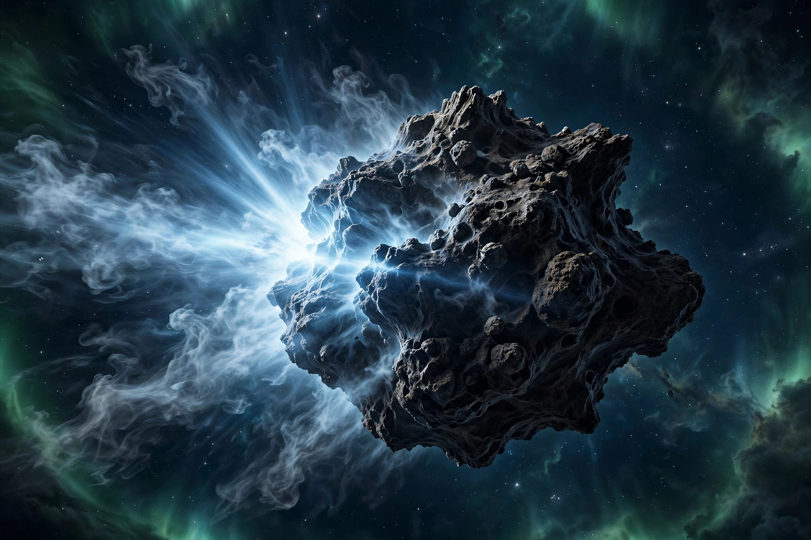
November 04, 2026
To Deflect an Asteroid, Where You Aim Matters More Than Anyone Thought
New Sandia simulations show that an asteroid's lumpy, irregular shape can change the push from a nuclear X-ray burst by nearly fivefold depending on which side is hit — and change its spin by a factor of 17. Planetary defense, it turns out, is an aiming problem.
READ THE STORY →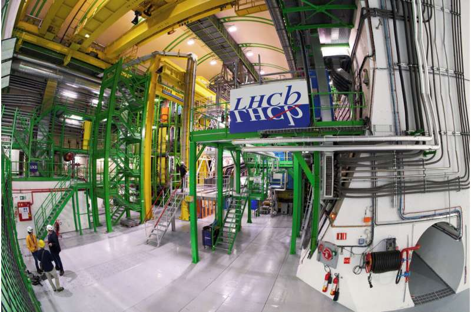
November 04, 2026
After 42 Years, Physicists Caught a Decay That Happens Once in 10 Billion
The upgraded LHCb experiment at CERN has found the first evidence for one of the rarest particle decays ever sought — a beauty particle transforming into two muons, a process predicted to occur only about once in every 10 billion beauty particles. At 3.2 sigma it is evidence, not yet a discovery — and a new window into the "Zeptoverse."
READ THE STORY →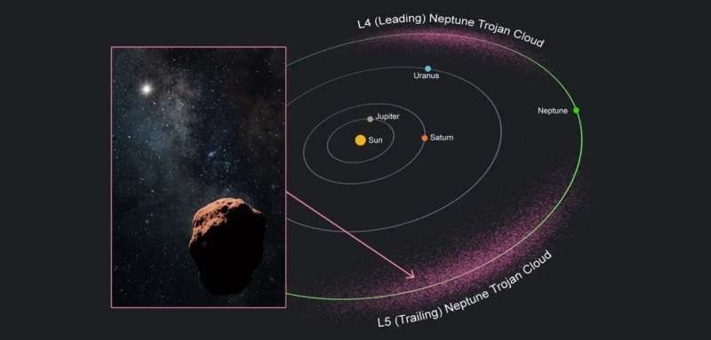
November 03, 2026
Neptune Was Hiding Its Trailing Trojans Behind the Milky Way
Astronomers have known Jupiter's Trojan asteroids since 1906, but Neptune's trailing cloud stayed elusive — crowded in front of the bright center of the Milky Way for a decade. Using early Rubin Observatory data, a Queen's University Belfast-led team has now identified two long-term stable trailing Trojans and a third candidate, doubling the known long-lived population.
READ THE STORY →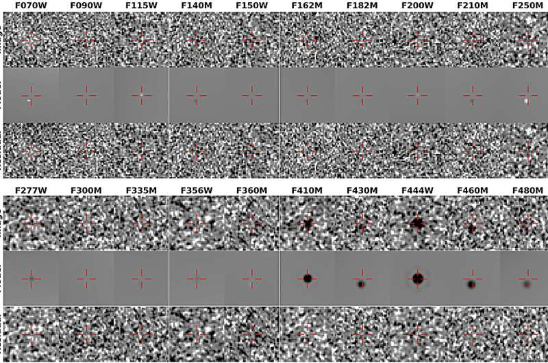
November 03, 2026
It Looked Like One of the First Galaxies. Then It Moved.
A faint red object nicknamed Capotauro appeared to be a galaxy from about 100 million years after the Big Bang. Images 3.5 years apart show it shifted — it is actually a cold brown dwarf about 2,400 light-years away in our own Milky Way.
READ THE STORY →
November 03, 2026
Earthquake Watch — The Week's Biggest Quake Nobody Felt, and a Tiny One 522 People Did
In the seven days ending November 3, the USGS catalog logged 349 earthquakes of magnitude 2.5 or greater — five of them magnitude 6 or stronger, all Green alert. The most-reported quake of the week was a magnitude 2.7 in California.
READ THE STORY →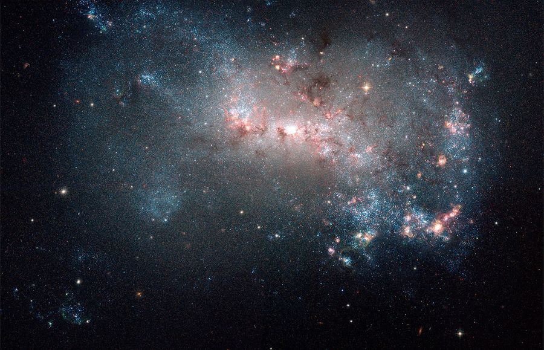
November 03, 2026
The Case of the Missing Oxygen: Hubble Finds Dwarf Galaxies Keep Only a Tenth of What Their Stars Make
A Hubble census of 37 nearby dwarf galaxies found they retain just 4% to 25% of the oxygen their stars produced — about 11% on average. Supernova-driven winds are carrying the rest away, more effectively than models predicted.
READ THE STORY →
November 02, 2026
Earthquake Watch — A Quiet Day That Still Logged 204 Quakes
In the 24 hours ending this morning, the USGS catalog recorded 20 earthquakes of magnitude 4.5 or stronger — and not one above 5.1. Then a 5.3 south of Crete reminded everyone the day was not over.
READ THE STORY →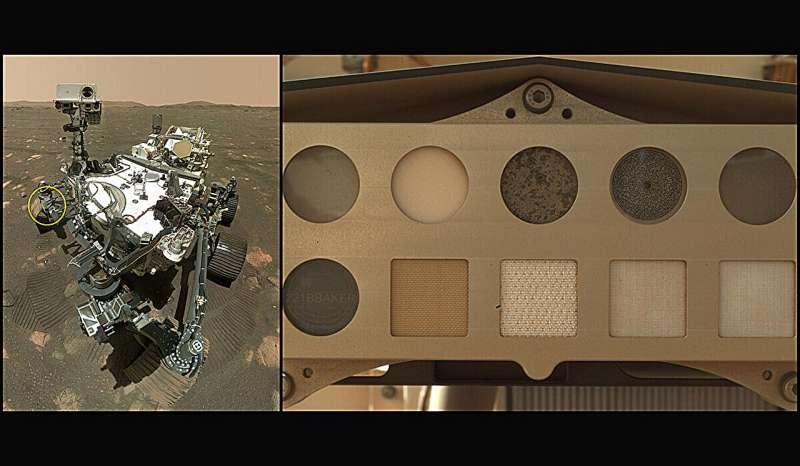
November 02, 2026
Mars Dust Is Kinder to Spacesuits Than Moon Dust — and Sneakier
Perseverance has spent 1,645 Martian days wearing tiny swatches of spacesuit fabric. The good news: Mars dust is smooth and barely wears the material. The catch: some of it is 100 nanometers wide and laced with toxic perchlorates.
READ THE STORY →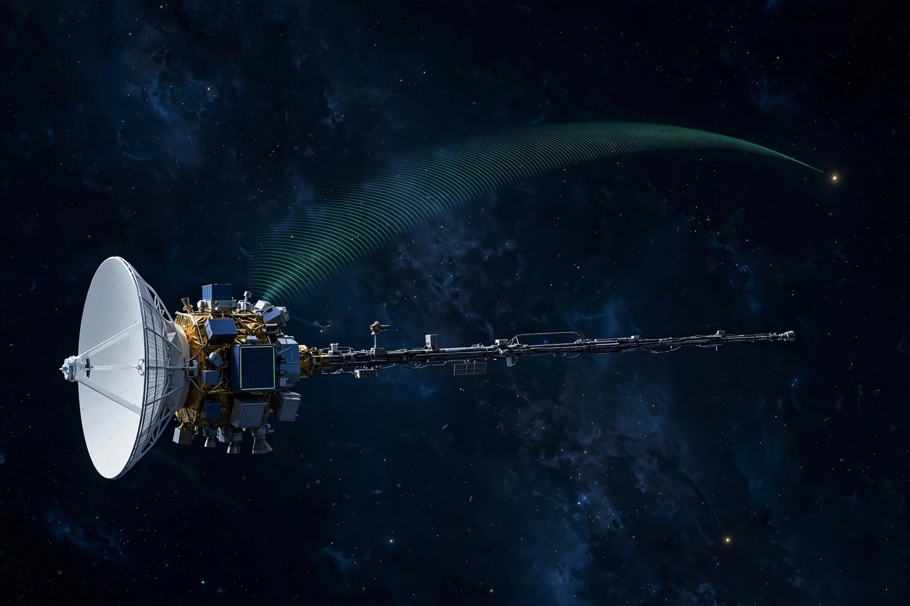
November 01, 2026
In 17 Days, Light Itself Will Need a Full Day to Reach Our Farthest Machine
On November 18, 2026, NASA's Voyager 1 — launched in 1977 — will cross the one-light-day mark, 16.1 billion miles from the Sun. A signal sent that morning will not arrive until the next day.
READ THE STORY →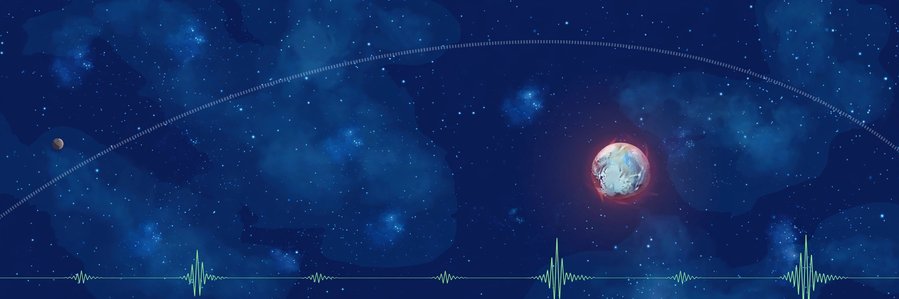
November 01, 2026
A World Maybe 1,000 Kilometers Wide Was Hiding Beyond Pluto
The Vera C. Rubin Observatory has found its first dwarf planet candidate, 2026 ED138 — a large, bright, red world beyond Neptune that sat unnoticed in survey data and in archives going back to 2016.
READ THE STORY →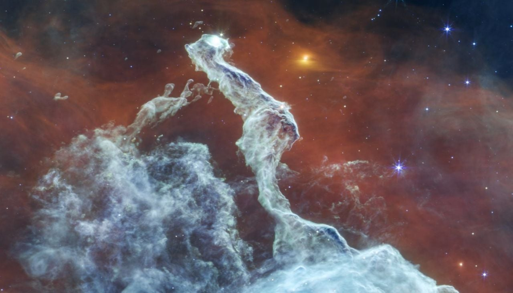
October 31, 2026
Something Is Watching From 7,500 Light-Years Away — Webb and Hubble Catch the Cat's Head Nebula Staring Back
Released just before Halloween, NASA's new Webb and Hubble views of the Cat's Head Nebula show a dusty pillar inside the Carina Nebula being carved by massive stars — with a newborn star for an eye.
READ THE STORY →
October 28, 2026
Earthquake Watch — Five M5+ Quakes in Under Three Hours off Vanuatu
A magnitude 6.0 struck northwest of Port-Olry, Vanuatu on October 28 — the middle of a tight cluster of five magnitude 5.0-or-greater events in about two hours and 52 minutes, all shallow, all offshore, Green alert.
READ THE STORY →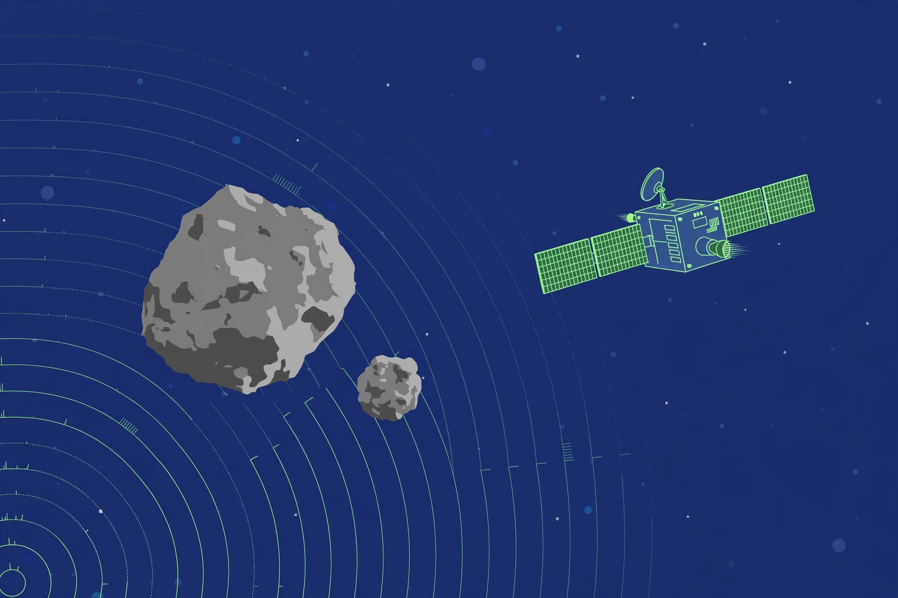
October 24, 2026
The asteroid crime scene is about to get its first inspector
Four years after NASA deliberately smashed a spacecraft into the asteroid Dimorphos, ESA's Hera mission has hit the brakes 2,300 kilometres out and is due to arrive on 4 November to examine the aftermath.
READ THE STORY →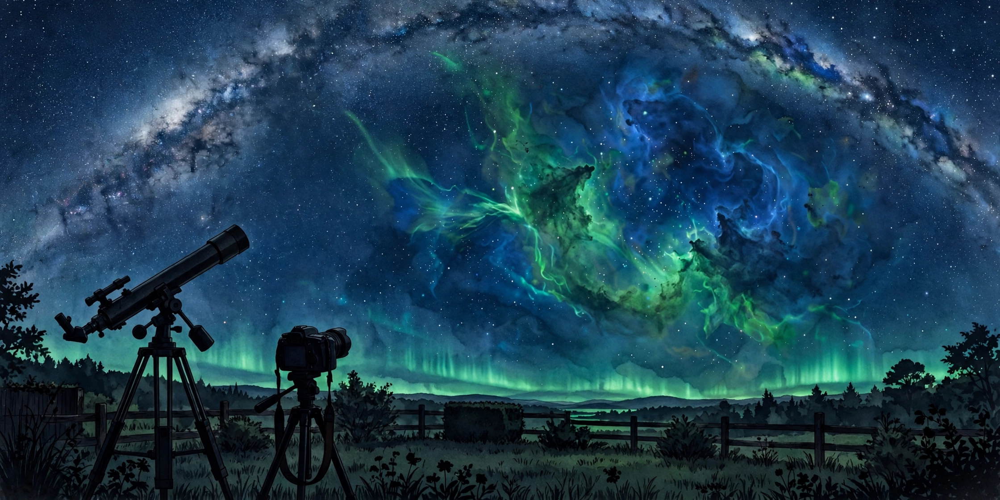
October 24, 2026
Astronomy magazine's 2026 astrophotography contest has its winners
More than 1,400 entries, 13 years since the last contest — and the grand prize went to "The Dementors of Cepheus," nearly 30 hours of exposure on a supernova remnant.
READ THE STORY →Showing the latest 25 — browse the full archive →